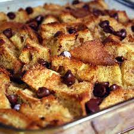

This is the third of many recipes to be included here on this webpage. This one is also from celebrity chef Mathy Matheson.
Click Here to return to the homepage.
Bread Pudding

Bread pudding is a classic dessert made by layering or mixing stale bread with a custard made of milk, eggs, sugar,
and flavorings like vanilla, cinnamon, or nutmeg. The mixture is then baked until the custard sets and the top becomes golden brown.
It's often served with a sweet sauce, such as vanilla sauce or caramel sauce. The result is a comforting, warm, and delicious dessert that makes great use of leftover bread.
It's popular in many cuisines around the world and can be enjoyed in various forms, from simple homestyle recipes to more elaborate versions with
added fruits, nuts, or chocolate.
Ingredients
French Toast
- Non-stick cooking spray
- 1 loaf of bread cut into cubes
- 1 cup chocolate hazelnut spread
- 1 cup peanut butter
- 3 Eggs
- 2 cups cream
- 1/4 cup brandy
- 1/4 cup sugar
- 1 tsp vanilla extract
- 1 tsp cinnamon
- 1/2 tsp cardamon
- 1/2 tsp mace
- 1/2 tsp nutmeg
- 1 tsp salt
- 2 tbsp butter
Maple Syrup
- 1 cup pistachios
- 1 cup maple syrup
- 1 lemon, zested and juiced
- salt, to taste
Garnish
Method
For the Bread Pudding
- Preheat oven to 180 C.
- Spray a 6x4 inch casserole dish with non-stick cooking spray.
- In a large bowl, add cream, eggs, brandy, vanilla, spices and whisk to combine
- Add half the diced bread to the casseroll dish, then pour over the top half of the cream mixture.
- Add several dollops of peanut butter and hazelnut spread adn sprinkle salt over the top.
- Add another ladle of cream mixture then top with more bread.
- Top with more cream mixture and dollops of hazelnut spread and peanut butter.
- Cover the dish with foil and bake for 30 mins
- Uncover and bake until custard is fully set and the bread is golden brown.
- Remove from the oven and allow to cool.
For the Maple Syrup
- In a small saucepan, add pistachios and maple syrup, bring to a simmer.
- Cook for 2-3 minutes until the liquid has slightly reduced.
- Add lemon zest, lemon juice and salt, stir to combine then remove from heat.